Week 6 — Lecture notes
Frequency response
Other formats:
📄 PDFLecture outline
- Recap of Fourier transform
- Response to arbitrary inputs.
- Impulse response & convolution with exponentials.
- Finding the impulse response
- Interconnection
- Plotting the impulse response
- First order systems
- Second order systems & resonance
- Periodic inputs.
- Cascades & string instability.
Recap: the Fourier transform
★ Expresses a signal as an integral of sinusoidal components.
U(j\omega) = \int_{-\infty}^{\infty} u(t)\,e^{-j\omega t}\,\mathrm{d}t
(The Fourier transform, generalises Fourier series coefficients).
u(t) = \frac{1}{2\pi}\int_{-\infty}^{\infty} U(j\omega)\,e^{\,j\omega t}\,\mathrm{d}\omega
(The inverse Fourier transform, generalises the Fourier series).
Transform pairs.
| u(t) | U(j\omega) |
|---|---|
| A\,p_\tau(t) | A\tau\operatorname{sinc}\!\left(\dfrac{\omega\tau}{2\pi}\right) |
| \delta(t) | 1 |
| e^{-at}H(t) | \dfrac{1}{a+j\omega} |
| 1 | 2\pi\delta(\omega) |
| e^{\,j\omega_0 t} | 2\pi\delta(\omega-\omega_0) |
| \cos(\omega_0 t) | \pi\delta(\omega-\omega_0) + \pi\delta(\omega+\omega_0) |
Two most important properties:
\frac{\mathrm{d}}{\mathrm{d}t}u(t) \;\rightsquigarrow\; j\omega\,U(j\omega) \qquad(1)
u * y \;\rightsquigarrow\; U(j\omega)\,Y(j\omega) \qquad(2)
Why are these useful? \; (1) — find h(t).
\qquad\qquad\qquad\qquad\;\, (2) — calculate output to any input once we have h(t).
Finding the impulse response
Let’s see how. \; RLC circuit
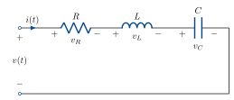
g(t) = 6.25\,e^{-3t}\sin(4t)\,H(t).
v input, v_C output.
KVL: \;v_R + v_L + v_C = v.
\begin{aligned} i &= \frac{\mathrm{d}}{\mathrm{d}t}C v_C \\[6pt] v_L &= \frac{\mathrm{d}}{\mathrm{d}t}L i \\[6pt] &= \frac{\mathrm{d}^2}{\mathrm{d}t^2}LC v_C \\[6pt] v_R &= Ri \\[6pt] &= RC\frac{\mathrm{d}}{\mathrm{d}t}v_C . \end{aligned}
All together: \;LC\dfrac{\mathrm{d}^2}{\mathrm{d}t^2}v_C + RC\dfrac{\mathrm{d}}{\mathrm{d}t}v_C + v_C = v.
Now Fourier transform both sides:
LC(j\omega)^2 V_C(j\omega) + RC\,j\omega\,V_C(j\omega) + V_C(j\omega) = V(j\omega)
If u(t) = \delta(t), V(j\omega) = 1.
G(j\omega) = V_C(j\omega) = \frac{1}{(j\omega)^2 LC + j\omega RC + 1}
Check: same as the end of last lecture!
This is the Fourier transform of the impulse response, which is called the transfer function. Often we’ll use G(j\omega) as notation.
Now, given any other input u(t) \rightsquigarrow U(j\omega), we know the output is y(t) = (u * h)(t) \rightsquigarrow Y(j\omega) = U(j\omega)G(j\omega).
Response to arbitrary inputs
Let’s see an example. With the values from last week,
G(j\omega) = \frac{25}{(j\omega)^2 + 6j\omega + 25}.
Do hand example here?
We also have the spectrum of the Pulse:
p_\tau(t) \;\rightsquigarrow\; \tau\operatorname{sinc}\!\left(\frac{\omega\tau}{2\pi}\right).
Let’s shift the pulse so it starts at t = 0, not t = -\dfrac{\tau}{2}.
u(t - t_0) \;\rightsquigarrow\; e^{-j\omega t_0}\,U(j\omega),
So
p_\tau\!\left(t - \frac{\tau}{2}\right) \;\rightsquigarrow\; e^{-j\omega\frac{\tau}{2}}\,\tau\operatorname{sinc}\!\left(\frac{\omega\tau}{2\pi}\right).
If we plug this into the circuit as the supply voltage v(t), the output has Fourier Transform
Y(j\omega) = \frac{25}{(j\omega)^2 + 6j\omega + 25}\; e^{-j\omega\frac{\tau}{2}}\,\tau\operatorname{sinc}\!\left(\frac{\omega\tau}{2\pi}\right).
To get the time domain output, inverse Fourier transform.
Painful by hand, but easy on a computer.
Convolution with exponentials
What happens to a sinusoidal input v(t) = e^{\,j\omega_0 t}?
In the time domain:
\begin{aligned} y = h * v &= \int_{-\infty}^{\infty} v(t-\tau)\,h(\tau)\,\mathrm{d}\tau \\[6pt] &= \int_{-\infty}^{\infty} e^{\,j\omega_0 t}\,e^{-j\omega_0\tau}\,h(\tau)\,\mathrm{d}\tau \\[6pt] &= \int_{-\infty}^{\infty} e^{-j\omega_0\tau}\,h(\tau)\,\mathrm{d}\tau\; e^{\,j\omega_0 t} \\[6pt] &= G(j\omega_0)\,e^{\,j\omega_0 t}. \end{aligned}
Transfer function scales each frequency!
Interconnections and transfer functions
In the frequency domain, this is just a product: \;Y(j\omega) = H_2(j\omega)H_1(j\omega)U(j\omega).
What about feedback?
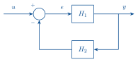
\begin{aligned} E(j\omega) &= U(j\omega) - H_2(j\omega)Y(j\omega) \\[6pt] &= U(j\omega) - H_2(j\omega)H_1(j\omega)E(j\omega) \end{aligned}
E(j\omega) = \frac{1}{1 + H_2(j\omega)H_1(j\omega)}\,U(j\omega).
Y(j\omega) = H_1(j\omega)E(j\omega) = \frac{H_1(j\omega)}{1 + H_2(j\omega)H_1(j\omega)}\,U(j\omega).
Example: good question from last week’s lecture.
RC circuit:
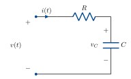
\begin{aligned} v_R &= Ri, & V_R(j\omega) &= R\,I(j\omega). \\[6pt] i &= \frac{\mathrm{d}}{\mathrm{d}t}C v_C, & I(j\omega) &= j\omega C\,V_C(j\omega), \\[6pt] & & V_C(j\omega) &= \frac{1}{j\omega C}\,I(j\omega). \end{aligned}
KVL: \;v = v_C + v_R
\begin{aligned} V(j\omega) &= V_C(j\omega) + V_R(j\omega) && \text{(Fourier transform is linear)}. \\[6pt] &= \left(R + \frac{1}{j\omega C}\right)I(j\omega). \end{aligned}
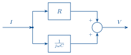
What about I to V?
\begin{aligned} I(j\omega) &= \frac{1}{R + \dfrac{1}{j\omega C}}\,V(j\omega) \\[10pt] &= \frac{j\omega C}{j\omega RC + 1}\,V(j\omega). \end{aligned}
\frac{\dfrac{1}{j\omega C}}{1 + \dfrac{R}{j\omega C}}
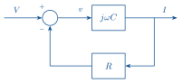
feedback of j\omega C (capacitor maps voltage to current). with R (resistor maps current to voltage).
Decibels
Power & amplitude.
Power gain is measured in power decibels:
\alpha^2\;(\mathrm{V}^2) \;\rightsquigarrow\; 10\log_{10}\alpha^2 \quad (\mathrm{dB}).
Amplitude gain is measured in amplitude decibels:
\alpha\;(\mathrm{V}) \;\rightsquigarrow\; 20\log_{10}\alpha \quad (\mathrm{dB}).
Why the factor of 2? \;10\log_{10}\alpha^2 = 20\log_{10}\alpha.
Makes power and amplitude consistent.
Plotting the impulse response
There are a few ways to plot the impulse response.
The most common is the Bode Diagram, which plots the argument and amplitude of G(j\omega) on two separate plots.
Amplitude is measured in decibels, 20\log_{10}|G(j\omega)|.
Frequency is plotted on a log scale.
For example,
\frac{25}{(j\omega)^2 + 6j\omega + 25}
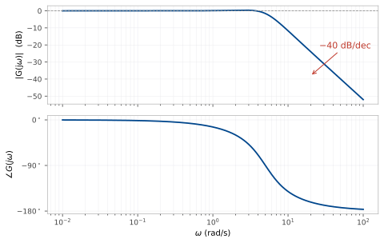
What does this plot say?
First order systems
(one memory component).
Differential equation:
\tau\dot{y} = -y + \beta u
\tau j\omega Y(j\omega) = -Y(j\omega) + \beta U(j\omega).
Y(j\omega) = \frac{\beta}{\tau j\omega + 1}U(j\omega).
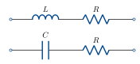
What does the impulse response look like? (Quiz 1).
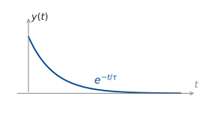
Bode diagram
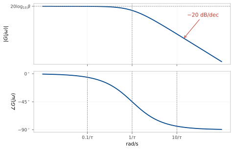
Second order systems
Second order systems have two poles.
We can write a second order system in a standard form:
G(j\omega) = \frac{K\omega_n^2}{(j\omega)^2 + 2\omega_n\zeta(j\omega) + \omega_n^2}
K, then assumed 1.
\omega_n is called the natural frequency.
\zeta is called the damping ratio.
The roots of the polynomial (j\omega)^2 + 2\omega_n\zeta(j\omega) + \omega_n^2 are the poles:
\begin{aligned} j\omega &= \frac{-2\omega_n\zeta \pm \sqrt{4\omega_n^2\zeta^2 - 4\omega_n^2}}{2} \\[8pt] &= -\omega_n\left(\zeta \pm \sqrt{\zeta^2 - 1}\right). \end{aligned}
Three cases:
\zeta > 1: two distinct real poles (overdamped)
\zeta = 1: two identical real poles (critically damped)
\zeta < 1: complex conjugate poles (underdamped).
Recall from lecture 1: imaginary part gives rotation/oscillation.
Are these the same poles as lecture 1? Yes!
G(j\omega) = \frac{A}{(j\omega + p_1)} + \frac{B}{(j\omega + p_2)}.
Each pole \overset{\text{I.F.T.}}{\rightsquigarrow} e^{-p_i t}.
We can get the Bode diagram of a critically/over damped system by cascading two first order systems:
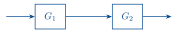
|G(j\omega)| = |G_1(j\omega)G_2(j\omega)|
\begin{aligned} 20\log_{10}|G_1(j\omega)G_2(j\omega)| &= 20\log_{10}|G_1(j\omega)||G_2(j\omega)| \\[6pt] &= 20\log_{10}|G_1(j\omega)| + 20\log_{10}|G_2(j\omega)| \end{aligned}
\angle G_1(j\omega)G_2(j\omega) = \angle G_1(j\omega) + \angle G_2(j\omega)
Cascade \rightsquigarrow add magnitudes, add phases.
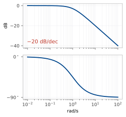
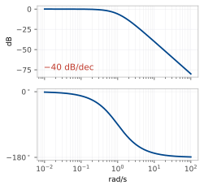
What about complex poles?
If the damping is low enough, the system amplifies some frequencies.
|G(j\omega)|^2 = \left|\frac{\omega_n^2}{(j\omega)^2 + 2\zeta\omega_n(j\omega) + \omega_n^2}\right|^2 = \frac{\omega_n^4}{(\omega_n^2-\omega^2)^2 + 4\zeta^2\omega_n^2\omega^2}
Let x = \omega^2.
|G(j\omega)|^2 = \frac{\omega_n^4}{(\omega_n^2 - x)^2 + 4\zeta^2\omega_n^2 x}.
Let’s minimise the denominator to find the maximum gain:
\min_x\left[(\omega_n^2 - x)^2 + 4\zeta^2\omega_n^2 x\right]
Diff. w.r.t. x and set to 0:
\begin{aligned} -2(\omega_n^2 - x) + 4\zeta^2\omega_n^2 &= 0. \\[6pt] x &= \omega_n^2\left(1 - 2\zeta^2\right). \end{aligned}
This is positive only when \zeta < \dfrac{1}{\sqrt{2}}.
In this case, \omega_r = \sqrt{x} = \omega_n\sqrt{1 - 2\zeta^2} is the resonant frequency.
The lower the damping ratio, the more the resonant frequency is amplified.
Periodic inputs
We developed the Fourier transform for aperiodic inputs. But if we have a periodic input to a system with aperiodic impulse response, we need to convolve a periodic signal with an aperiodic one. For this, we need the Fourier transform of a periodic signal.
From last week, we know that e^{\,j\omega_0 t} \rightsquigarrow 2\pi\delta(\omega - \omega_0).
The Fourier series (week 4 lecture) is
u(t) = \sum_{k=-\infty}^{\infty} c_k\,e^{\,jk\omega_0 t}.
Combining, we have
U(j\omega) = \sum_{k=-\infty}^{\infty} c_k\,2\pi\,\delta(\omega - k\omega_0). \qquad(3)
Check:
\begin{aligned} \cos(\omega_0 t) &= \tfrac{1}{2}\left(e^{\,j\omega_0 t} + e^{-j\omega_0 t}\right) \\[6pt] c_{-1} &= \tfrac{1}{2}, \qquad c_1 = \tfrac{1}{2}. \end{aligned}
In (3): \;U(j\omega) = \pi\delta(\omega - \omega_0) + \pi\delta(\omega + \omega_0).
Example: cascading resonant systems & traffic dynamics
Setup: one car following another.
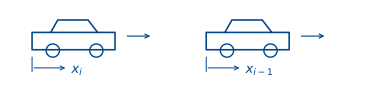
Car is a mass with acceleration governed by throttle & brakes:
\begin{aligned} M\ddot{x}_i &= a_i \\[6pt] \ddot{x}_i &= \frac{a_i}{M}. \end{aligned}
Normalise so M = 1.
The driver tries to maintain a constant gap d with the car in front.
If gap is too small/large, driver brakes/accelerates.
a_i = k_p\left(x_{i-1} - x_i - d\right).
If gap is closing/opening too fast, driver brakes/accelerates more or less:
a_i = k_p\left(x_{i-1} - x_i - d\right) + k_d\left(\dot{x}_{i-1} - \dot{x}_i\right)
Together:
\ddot{x}_i + k_d\dot{x}_i + k_p x_i = k_d\dot{x}_{i-1} + k_p x_{i-1} - k_p d.
Let’s find the transfer function from x_{i-1} to x_i.
Offset x_{i-1} by d to get rid of the constant term.
(j\omega)^2 X_i + k_d\,j\omega X_i + k_p X_i = k_d\,j\omega X_{i-1} + k_p X_{i-1}.
X_i = \underbrace{\frac{k_d\,j\omega + k_p}{(j\omega)^2 + k_d\,j\omega + k_p}}_{T(j\omega)}\,X_{i-1}.
Now, judging a distance is much easier than judging a rate, so k_d \ll k_p.
The damping ratio is \dfrac{k_d}{2\sqrt{k_p}} \ll 1: underdamped.
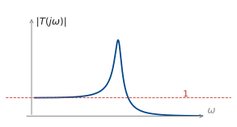
What happens if we have many cars following each other? Cascade transfer functions — resonant peaks add. \;(T(j\omega))^N. \;|T(j\omega)| > 1 when k_p^2 > (k_p - \omega^2)^2.
Disturbance is amplified: driver at the front tapping their brakes becomes a big oscillation further back in the queue.